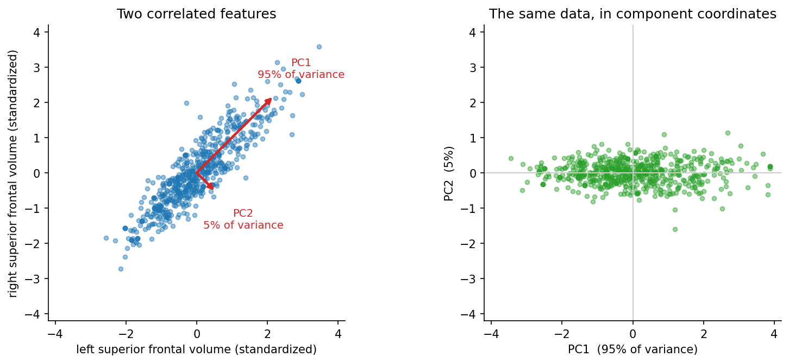
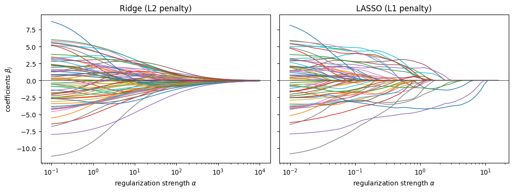

Reducing Complexity: a Brief Theory#
Chapter 3 gave us a picture to aim at: prediction error on unseen data falls, bottoms out, and then rises as a model becomes more complex. We can now find that valley. This chapter is about moving into it deliberately.
Model complexity is not something we have to accept as given. It can be dialled up and down, and the settings that control it are called hyperparameters — parameters that are not learned from the data during fitting, but chosen beforehand. Tuning them is what turns a statistical model into a machine learning model.
There are two basic ways to reduce complexity:
reduce the number of free parameters that fitting is allowed to optimize;
keep the parameters but impose a penalty on large ones, so the fit prefers to leave most of them near zero.
This page covers the theory of both, at the depth needed to use them well. The next page puts them to work.
Feature reduction#
Selecting features by their association with the target#
The bluntest approach: keep only the features that appear related to the target in the training data, judged by any conventional test statistic — for example the absolute value of Pearson’s correlation coefficient,
The threshold — or, equivalently, the number of features kept — is a hyperparameter. A higher threshold means fewer predictors and lower complexity.
This approach has two well-known weaknesses. It ignores what features do in combination, so it discards predictors that are useless alone but valuable alongside others. And with strongly collinear features — exactly our situation — it tends to retain whole clusters of near-duplicates, reducing the feature count without reducing the effective complexity by nearly as much.
Warning
Feature selection looks at the target. It must therefore happen inside cross-validation, using only the training part of each fold. Selecting features once on the whole dataset is the single most common serious error in applied predictive modelling, and it has its own page: leakage.
Principal component analysis#
A more sophisticated route is dimensionality reduction. Principal component analysis (PCA) is an orthogonal linear transformation to a new coordinate system, in which the first coordinate (the first principal component) captures the greatest possible variance in the data, the second the greatest remaining variance, and so on.
Loosely: where several features share a common source of variation, PCA condenses that shared part into a single new variable. Keeping the first \(k\) components retains as much of the total variance as \(k\) variables possibly can, and — because the components are orthogonal — they are not redundant with one another. For collinear data this is dramatically more efficient than selecting raw features.
{kind=link}

Fig. 5 Principal component analysis, on two real and strongly correlated features: the volume of the superior frontal cortex in the left and the right hemisphere (\(r = 0.90\)). Left: the first component points along the direction of greatest variance, the second is perpendicular to it and picks up what little is left. Right: the same 638 participants described by their component scores instead of their volumes. Almost all of the spread is along one axis — which is the point: two correlated measurements carry barely more information than one well-chosen combination of them, and PCA is what finds that combination.#
Note what PCA does not use: the target. It reorganizes the predictors on their own terms. This is a weakness — the largest source of variance in the data need not be the one related to age — but also a convenience, since a step that never looks at the target cannot leak it.
Partial least squares#
Partial least squares (PLS) takes the best of both. Like PCA it builds components as linear combinations of the features, but it chooses them to maximize covariance with the target rather than variance within the predictors. Its components are therefore ordered by how much they explain of what we care about, and PLS typically reaches a given level of performance with fewer components than PCA.
The price is that PLS uses the target, so — like feature selection, and unlike PCA — it must live inside the cross-validation loop.
Note
PLS can predict several target variables at once, which is occasionally very useful.
Regularization#
Instead of deciding in advance how many predictors a model may use, we can let it keep all of them but make complexity expensive.
Recall the quantity minimized when fitting a linear model, from chapter 2:
To regularize, we add a penalty term \(f\) that grows as the coefficients grow:
where \(\alpha \geq 0\) is the hyperparameter controlling how much complexity costs. At \(\alpha = 0\) we recover ordinary least squares; as \(\alpha \to \infty\) every coefficient is crushed to zero and the model degenerates into predicting the mean — the baseline from chapter 2. Everything interesting is in between, and the whole of the complexity curve can be traversed with this one dial.
Standardize first#
Before going further, one practical point that is easy to skip and expensive to get wrong.
The penalty is computed from the size of the coefficients. But the size of a coefficient depends on the units of its feature: measure a volume in mm³ rather than cm³ and its coefficient becomes a thousand times smaller, paying a thousandth of the penalty for exactly the same model. A penalty applied to features on different scales therefore regularizes them by wildly different amounts, for no reason connected to the data.
The remedy is to standardize the features first — subtract the mean, divide by the standard deviation — so that all coefficients are on a common footing:
Warning
The mean \(\overline{x_j}\) and standard deviation \(s_j\) must be computed on the training data of the fold only, and then applied to the test data. Standardizing the whole dataset first uses the test participants’ values to transform the training participants’, which is leakage — subtle, popular, and covered on the leakage page.
Ridge#
In Ridge regression [9] the penalty is the squared L2-norm of the coefficients:
Large coefficients are penalized quadratically, so the fit prefers many small coefficients over a few large ones. Faced with a group of collinear features, Ridge spreads the weight evenly across the group rather than picking a champion — which is stable, and often exactly what you want when the features are noisy measurements of the same underlying thing.
Ridge shrinks coefficients towards zero but never exactly to zero: every feature stays in the model, with a small say.
LASSO#
LASSO [10, 11] (least absolute shrinkage and selection operator) uses the L1-norm instead:
The change looks cosmetic and is not. Because the absolute value has a corner at zero, the optimum frequently lands exactly on zero for many coefficients. LASSO therefore performs feature selection as part of fitting: raise \(\alpha\) and features drop out of the model one by one.
The practical difference between the two is easiest to see by fitting the same data at many values of \(\alpha\) and plotting what happens to the coefficients — the regularization path.
import numpy as np
import pandas as pd
import matplotlib.pyplot as plt
from sklearn.linear_model import Ridge, Lasso
from sklearn.preprocessing import StandardScaler
DATA_URL = "https://raw.githubusercontent.com/pni-lab/predmod_lecture/master/ex_data/IXI/ixi.csv"
ixi = pd.read_csv(DATA_URL).sample(frac=1, random_state=42).reset_index(drop=True)
TARGET = 'Age'
FEATURES = [c for c in ixi.columns if c.endswith('_volume')]
df = ixi.iloc[:100]
X = StandardScaler().fit_transform(df[FEATURES]) # standardize, as discussed above
y = df[TARGET].values
# the two penalties reach comparable amounts of shrinkage at very different alphas,
# so each panel gets the range over which its own coefficients actually move
ridge_alphas = np.logspace(-1, 4, 60)
lasso_alphas = np.logspace(-2, 1.2, 60)
ridge_path = [Ridge(alpha=a).fit(X, y).coef_ for a in ridge_alphas]
lasso_path = [Lasso(alpha=a, max_iter=10000).fit(X, y).coef_ for a in lasso_alphas]
fig, axes = plt.subplots(1, 2, figsize=(11, 4.2), sharey=True)
for ax, alphas, path, name in [(axes[0], ridge_alphas, ridge_path, 'Ridge (L2 penalty)'),
(axes[1], lasso_alphas, lasso_path, 'LASSO (L1 penalty)')]:
ax.plot(alphas, np.array(path), lw=1)
ax.set_xscale('log')
ax.axhline(0, color='0.3', lw=0.8)
ax.set_xlabel(r'regularization strength $\alpha$')
ax.set_title(name)
axes[0].set_ylabel(r'coefficients $\beta_j$')
fig.tight_layout()
plt.show()

alphas = [0.1, 1, 10, 100]
pd.DataFrame({
'alpha': alphas,
'Ridge: features used': [int(np.sum(Ridge(alpha=a).fit(X, y).coef_ != 0)) for a in alphas],
'LASSO: features used': [int(np.sum(Lasso(alpha=a, max_iter=10000).fit(X, y).coef_ != 0)) for a in alphas],
})
| alpha | Ridge: features used | LASSO: features used | |
|---|---|---|---|
| 0 | 0.1 | 68 | 52 |
| 1 | 1.0 | 68 | 20 |
| 2 | 10.0 | 68 | 1 |
| 3 | 100.0 | 68 | 0 |
Both panels show coefficients being squeezed towards zero as \(\alpha\) grows — complexity being dialled down, continuously, by one number. But the manner differs completely. Ridge shrinks everything smoothly and keeps all 68 features however hard it squeezes. LASSO drives coefficients to exactly zero one after another, so that raising \(\alpha\) walks the model down through smaller and smaller feature sets, until nothing is left and it predicts the mean age for everybody.
Note also the x-axes: the same nominal \(\alpha\) means quite different things to the two penalties. Alpha is not a quantity to be carried across model types by intuition — it has to be tuned, per model, on data.
Note
Elastic net combines both penalties, with a second hyperparameter setting the mix. It keeps LASSO’s ability to discard features while handling groups of collinear features more gracefully, and is often the better default for data like ours.
Which to use?#
There is no universal answer, and the honest procedure is to treat the choice itself as something to be decided empirically, by cross-validation. As rough guidance:
keeps all features |
selects features |
handles collinearity |
|
|---|---|---|---|
Select \(k\) best |
no |
yes, crudely |
poorly |
PCA |
as components |
no |
very well |
PLS |
as components |
no |
very well |
Ridge |
yes |
no |
very well |
LASSO |
no |
yes |
picks one per group |
If you need to know which regions drive the prediction, LASSO and feature selection give you a short list — though a fragile one, since which member of a collinear group gets picked can change with a handful of participants. If you need stable predictions, Ridge is usually the safer bet. We return to this tension in chapter 7.
On the next page we apply all five to the IXI data — and then, on the page after, discover that tuning \(\alpha\) honestly is harder than it looks.